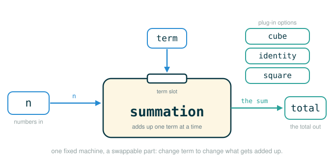

1.6 Higher-Order Functions: Functions as Arguments, Summation, and General Methods
So far a function has been a way to package up a computation and give it a name. You hand it numbers, it hands back a number. This lesson removes that limit. By the end of it you will be able to do four things: explain what a higher-order function is, write a single summation function that can add up naturals, cubes, squares, or the terms of a formula for , pass a function into another function as an argument without accidentally calling it too early, and use one general improve function to compute the golden ratio by iterative guessing.
The thread tying all of this together is one idea: a function can be treated as a value. It can be bound to a name, stored in a frame, passed into another function, and called later. Once you accept that, you can write functions that take behavior as input, not just numbers. That is the move that makes the rest of this course possible.
A Machine With a Tool Slot
Picture a workshop. You could build three separate machines: one that squares every part that comes down the belt, one that cubes every part, and one that runs each part through a formula. Three machines, three sets of moving parts, three things that can break. Most of each machine is identical — the belt, the motor, the counter that tracks how many parts have gone by. Only the cutting head differs.
A smarter shop builds one machine with an empty tool slot. The belt, motor, and counter live in the frame permanently. When you want squares, you snap in the squaring head. When you want cubes, you snap in the cubing head. The machine itself never changes; you just swap the small part that does the per-item work.
A higher-order function is that machine. The repeated skeleton — start a total at zero, count from one up to , add one new term each step — is built in. The tool slot is a parameter that expects a function. You snap in cube, or square, or identity, and the same machine produces a different result. You are no longer writing three machines. You are writing one machine and three small heads.
Functions as Values
Here is the formal statement. Functions that manipulate functions are called higher-order functions. Concretely, a higher-order function does at least one of two things: it takes a function as an argument, or it returns a function as its value. This lesson is about the first kind; returning functions comes later.
To see why this is even possible, recall how names and values work. When you write def square(x): ..., Python creates a function object and binds the name square to it. That binding is no different in kind from binding x to 5. Both are names pointing at values. The only difference is what Python can later do with each value:
a number value can be added, multiplied, compared, and returned
a function value can be called later by writing parentheses after itSo when you pass square into another function, you are not passing a vague instruction or a copy of source code. You are passing the actual function object. The receiving function can store it under a local name and call it whenever it likes. That is the entire trick, and everything below is an application of it.
Three Summations That Are Almost Identical
Start with a concrete problem before the abstraction. Summing the natural numbers from to looks like this:
# (1)
def sum_naturals(n):
total, k = 0, 1
while k <= n:
total, k = total + k, k + 1
return total
Calling it with :
>>> sum_naturals(100)
5050which is the familiar
Now sum the cubes instead. Notice how little changes:
# (2)
def sum_cubes(n):
total, k = 0, 1
while k <= n:
total, k = total + k*k*k, k + 1
return total
>>> sum_cubes(100)
25502500which is
Finally, a sum whose terms slowly close in on a fraction of . The body is the same shape again, only the term changes:
# (3)
def pi_sum(n):
total, k = 0, 1
while k <= n:
total, k = total + 8 / ((4*k-3) * (4*k-1)), k + 1
return total
You do not need to derive this formula or know why it works — it is a known series for , and the only point here is that its term, like the others, is just a rule that turns into a number. Run it for one hundred terms and you get a number that is already in the neighborhood of :
>>> pi_sum(100)
3.1365926848388144That is one hundred terms added and then stopped, which lands just short of ; more terms would creep closer. The th term added here is
and as more terms accumulate the running total approaches itself.
summation: Putting a Function in the Slot
The fix is to make the term rule a parameter. Since the term rule is "a way of turning a number into another number," it is itself a function, so the parameter must accept a function:
# (4)
def summation(n, term):
total, k = 0, 1
while k <= n:
total, k = total + term(k), k + 1
return total
The parameter term is the tool slot. It is not a number. Inside the loop, term(k) snaps the supplied tool onto the current counter and produces the next number to add.
Here is that machine as a picture: one fixed summation body with a single slot you drop a term function into.

This is the exact spot where many beginners switch mental models without noticing. In summation(n, term), the name term does not mean "the next number." It means "the rule for producing the next number." If term is bound to cube, then term(2) produces the next number by running cube(2). If term is bound to identity, then term(2) produces the next number by running identity(2). The loop never knows or cares which rule it holds; it just calls term on k each step.
Follow the line: term(k)
The expression term(k) is tiny but it carries the whole higher-order idea. Read it one piece at a time:
term(k)
├─ term ........ a local name in the summation frame, bound to a function
├─ ( ........... begins a function call
├─ k ........... the current counter value, passed as the argument
├─ ) ........... ends the function call
└─ evaluates to the result of calling that function on the current kThe parentheses are the entire difference between talking about a tool and using it. Compare:
term the function object sitting in the local frame (the tool itself)
term(k) the result of calling that function on the current k (using the tool)When you read any line involving a function name, the safe question is always: am I naming the tool, or am I using the tool right now? The presence of (...) is the answer.
Warm-Up: summation by Hand
Before plugging in official term functions, verify the machine on a tiny input you can check in your head. Suppose term just returns its input doubled (we will use real official terms below; this is only to watch the loop turn):
# (5)
def double(x):
return x + x
summation(3, double)
Trace it: term(1) is 2, term(2) is 4, term(3) is 6, so the total is . The loop machinery did the adding and counting; double only decided what each term was. Now swap double for an official head and the machine keeps working unchanged.
Summing Cubes Through summation
Here is the official cube function and the official refactor of sum_cubes:
# (6)
def cube(x):
return x*x*x
# (7)
def sum_cubes(n):
return summation(n, cube)
The name cube is handed in as the term argument. Python does not copy the body of cube into summation. It binds the local name term to the very same function object that the global name cube points to, then calls it each iteration.
Trace sum_cubes(3) step by step. The call delegates to summation(3, cube), whose local frame starts as:
sum_cubes(3) calls summation(3, cube)
Local frame for summation
n -> 3
term -> function cube
total -> 0
k -> 1Now the loop, pass by pass. Each pass evaluates term(k), which means cube(k) because term is bound to cube:
k = 1: term(1) -> cube(1) -> 1 total becomes 0 + 1 = 1
k = 2: term(2) -> cube(2) -> 8 total becomes 1 + 8 = 9
k = 3: term(3) -> cube(3) -> 27 total becomes 9 + 27 = 36After the third pass k becomes 4, the test k <= n is false, and the function returns:
36which is exactly
The same skeleton, a different head, a different sum.
The identity Function and Summing Naturals
To sum the natural numbers we need a term rule that leaves untouched: the term for counter should just be . The function that returns its input unchanged is called identity:
# (8)
def identity(x):
return x
With identity as the head, you can sum the first ten naturals by calling summation directly:
>>> summation(10, identity)
55The loop adds identity(1), identity(2), up through identity(10), and because each of those is just the counter itself, the total is . With that working, sum_naturals becomes a one-liner built on summation:
# (9)
def sum_naturals(n):
return summation(n, identity)
>>> sum_naturals(10)
55Because identity(k) is just k, the machine adds , matching
identity looks pointless on its own — a function that does nothing to its input — but as a term rule it is exactly what "sum the numbers themselves" requires. Small functions like this earn their keep precisely when they are passed as arguments.
Calling summation Directly
You do not always need a named wrapper like sum_cubes. You can pass a term function straight into summation at the call site:
# (10)
def square(x):
return x*x
summation(10, square)
>>> summation(10, square)
385which computes
Here square is passed as the term function directly. Each iteration, the local name term is bound to the same object the global square points to:
k = 1: term(k) means square(1)
k = 2: term(k) means square(2)
k = 3: term(k) means square(3)This is why the loop body can stay byte-for-byte identical across cubes, naturals, and squares while the mathematical result changes completely. The behavior lives in the head you snap in, not in the machine.
Rebuilding pi_sum the Same Way
The sum follows the identical pattern. Pull the term out into its own function, then define the summation on top of summation:
# (11)
def pi_term(x):
return 8 / ((4*x-3) * (4*x-1))
# (12)
def pi_sum(n):
return summation(n, pi_term)
Now run it with a million terms:
>>> pi_sum(1e6)
3.141592153589902The notation 1e6 is scientific notation, a compact way to write
The result is close to but not exactly , and the reason is worth stating plainly. The series approaches as the number of terms grows without bound, but Python cannot add infinitely many terms. It ran the loop one million times, stopped, and returned the best running total it had at that stopping point. The program is finite; the mathematical object it approximates is infinite. "Approaches" is doing real work in that sentence.
General Methods: One Function, Many Equations
Summation generalizes a pattern of adding terms. The same higher-order idea generalizes a completely different pattern: iterative improvement, where you start with a rough guess and refine it until it is good enough.
An iterative improvement algorithm begins with a guess at the solution to an equation. It repeatedly applies an update function to push the guess closer, and after each step it applies a close function to ask "is this guess close enough yet?" When close finally says yes, it stops and returns the current guess. Both update and close are supplied as functions — two tool slots this time instead of one:
# (13)
def improve(update, close, guess=1):
while not close(guess):
guess = update(guess)
return guess
Follow the line: the improve header
The signature of improve packs in three ideas, including a default value. Read it part by part:
def improve(update, close, guess=1):
├─ def ......... begins a function definition
├─ improve ..... the name being bound to this new function
├─ update ...... first parameter: a function that produces a better guess
├─ close ....... second parameter: a function that returns True when done
├─ guess=1 ..... third parameter, with a default starting value of 1
└─ defines a general improver: refine guess with update until close says stopBecause guess has a default of 1, a caller may write improve(update, close) and start from automatically, or override it with improve(update, close, 10) to start elsewhere. The loop runs update again and again, reassigning guess each pass, and only halts when close(guess) is true.
The Golden Ratio as a Fixed Point
To make improve concrete we need an equation to solve. We will look for a value that the update rule eventually stops changing — what is later called a fixed point. The golden ratio, written , has a clean defining property: it is one less than its square. In symbols,
That equation is the target. We want a close test that checks whether a guess satisfies it, and an update rule that, applied over and over, drives a guess toward the value that does.
The update rule comes from rearranging the equation. Dividing by gives , which says: a better estimate of is one plus the reciprocal of your current estimate. That is golden_update:
# (14)
def golden_update(guess):
return 1/guess + 1
The stopping test should check the defining equation directly — is guess * guess close to guess + 1? We do not test exact equality, because floating-point arithmetic rarely lands on an exact value. Instead we test whether the two sides are within a tiny tolerance. That comparison is worth its own small function:
# (15)
def approx_eq(x, y, tolerance=1e-15):
return abs(x - y) < tolerance
Now the close test reads almost like its English description: the guess is good enough when its square is approximately equal to its successor.
# (16)
def square_close_to_successor(guess):
return approx_eq(guess * guess, guess + 1)
With the two heads built, snap them into improve:
>>> improve(golden_update, square_close_to_successor)
1.6180339887498951improve started at the default guess of 1, repeatedly applied golden_update, checked square_close_to_successor after each step, and stopped when the square of the guess came within of the guess plus one. The value it returned, , is the golden ratio.
Tracing improve for the Golden Ratio
It helps to watch the loop turn for a few passes. improve(golden_update, square_close_to_successor) builds a frame with guess starting at 1:
Local frame for improve
update -> function golden_update
close -> function square_close_to_successor
guess -> 1 (the default)Each pass first asks close(guess); if that is false it overwrites guess with update(guess):
check close(1): 1*1 = 1, successor = 2, not within tolerance -> keep going
guess = golden_update(1) = 1/1 + 1 = 2.0
check close(2.0): 4.0 vs 3.0, not close -> keep going
guess = golden_update(2.0) = 1/2.0 + 1 = 1.5
check close(1.5): 2.25 vs 2.5, not close -> keep going
guess = golden_update(1.5) = 1/1.5 + 1 = 1.6666...
... the guess keeps bouncing toward 1.618..., the gap shrinking each pass ...The guesses zig-zag and tighten on the golden ratio. Once guess * guess lands within of guess + 1, close returns True, the while ends, and improve returns the final guess:
1.6180339887498951The point of improve is that none of this loop machinery mentions the golden ratio. Hand it a different update and close pair and the very same function solves a different equation. The strategy — guess, refine, check, repeat — is captured once as a general method.
Checking the Result Against math.sqrt
The golden ratio has an exact closed form, , so we can confirm that improve found the right value. Python's math module provides sqrt:
>>> from math import sqrt
>>> phi = 1/2 + sqrt(5)/2We can bundle the check into a test function that recomputes the approximation with improve and asserts it matches phi within tolerance:
# (17)
def improve_test():
approx_phi = improve(golden_update, square_close_to_successor)
assert approx_eq(phi, approx_phi), 'phi differs from its approximation'
Calling improve_test() produces no output and raises no error, which is exactly what success looks like: the assert passes silently because the iterative approximation agrees with the closed-form value. An assert statement checks that a condition is true and, if it is not, stops the program with the given message. A test function that returns None and prints nothing is a test that passed.
⚠Common Beginner Traps
| Mistake | What Goes Wrong | Safer Question |
|---|---|---|
Writing summation(10, square()) |
Python calls square before summation receives it, and square is missing its argument |
Am I passing the function itself or the result of calling it? |
Treating term as a number |
term is a function value; term + 1 is meaningless, only term(k) yields a number |
Where in this line does the function actually get called? |
Testing guess * guess == guess + 1 |
Floating-point rounding means the two sides almost never match exactly, so the loop may never stop | Should I be checking exact equality, or closeness within a tolerance? |
Forgetting guess has a default |
Thinking improve(update, close) is an error for missing an argument |
Which parameters have defaults, so a caller may omit them? |
Expecting improve_test() to print something |
A passing assert is silent; no output means success, not failure |
Does this function return a value, or only assert and perform an action? |
| Writing a loop with nothing driving it toward the stop condition | The loop runs forever and the call hangs; in summation, k must climb toward n, and in improve, update must push guess toward what close accepts |
Does each pass move something closer to the condition that ends the loop? |
✓Check Your Understanding
- Using
cubefrom the lesson, what value doessummation(4, cube)return? Show the four terms you add. - Why should you write
summation(10, square)rather thansummation(10, square())? - During a call to
summation, what is the nametermbound to, and what doesterm(k)produce? - In
improve(update, close, guess=1), what roles doupdateandcloseplay, and what does the loop do untilcloseis satisfied? - Why does
square_close_to_successoruseapprox_eqinstead of==, and what equation is it checking? - When
improve_test()runs and prints nothing, did the test pass or fail? Why?
Show the answers
- It returns
100. The loop addscube(1) + cube(2) + cube(3) + cube(4), which is1 + 8 + 27 + 64 = 100. squarepasses the function value sosummationcan call it each iteration;square()tries to callsquareimmediately, with no argument, beforesummationever runs.termis bound to whatever function was passed as the second argument for that call;term(k)calls that function on the current counterkand produces the numeric term to add.updateproduces a better guess andclosereports whether the current guess is good enough; thewhileloop keeps replacingguesswithupdate(guess)untilclose(guess)is true, then returnsguess.- Floating-point values rarely match exactly, so it tests whether the two sides are within a tolerance instead of demanding exact equality; it is checking the golden-ratio equation , written as
guess * guessclose toguess + 1. - It passed; a successful
assertproduces no output, so silence means the approximation matchedphiwithin tolerance.
§Summary
Higher-order functions let you abstract over behavior, not just over numbers. The three near-identical summations collapse into one summation function because the only varying part, the term rule, is handed in as a function called term; the same loop then sums naturals with identity, cubes with cube, squares with square, and a series with pi_term. The same principle drives improve, a general method that takes an update function and a close function and refines a guess until it satisfies an equation — used here to compute the golden ratio, then checked against the closed form with math.sqrt. The discipline that ties both halves together is one habit: keep the difference between naming a function and calling a function crisp, because passing term or update is naming it, while term(k) or update(guess) is calling it.
▶Step-Through Checkpoint
The block below assembles the lesson's machine: the summation skeleton, a cube head, and the sum_cubes wrapper. Tracing it draws the environment diagram the machine actually builds: the sum_cubes frame opens first, then the one summation frame where term stays bound to cube while total and k update in place, and inside it a fresh cube frame flickers open and shut on each pass so you can watch term(k) resolve to a real call. Before you step, write down three predictions: how many local frames open in total, whether two cube frames are ever open at once, and how many returns carry the answer back to result.
# (18)
def summation(n, term):
total, k = 0, 1
while k <= n:
total, k = total + term(k), k + 1
return total
def cube(x):
return x*x*x
def sum_cubes(n):
return summation(n, cube)
result = sum_cubes(3)
Step through it and check each prediction as the frames appear. Five local frames open — sum_cubes, summation, and three for cube — as total moves 0 -> 1 -> 9 -> 36 and k reaches 4. Every evaluation of term(k) is really a call to cube(k), and the cube frames never overlap: each closes before the next opens, inside the one summation frame where term stays bound to cube. The 36 is returned twice, by summation and then by sum_cubes, before result binds it.